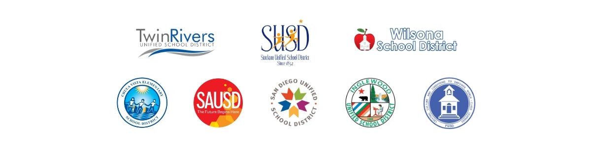

As a national expanded learning provider with roots in the Bay Area, we understand exactly what California schools need to deliver high-quality, engaging, and equitable learning that satisfies Expanded Learning Opportunities Program (ELOP) requirements.
From Before & After-School Programs and Supplemental Enrichment Courses to Structured Recess and Summer & School Break Programs, we provide flexible, customizable offerings that tick every box for ELOP success and delight students—all while reducing stress for your staff.
✳
Aligned to ELOP Priorities
Our programs promote whole-child development through hands-on STEAM, sports, arts, and social-emotional learning. We create safe, inclusive environments where students grow academically, physically, socially, and emotionally, emphasizing family engagement along the way—just as ELOP intends.
◎
Equity & Access at the Core
We partner with schools to expand access for historically underserved students. Our flexible, scalable programs ensure every child has enriching opportunities beyond the traditional school day.
↗
Ready When You Are
With expertly developed curriculum, meticulously vetted instructors, and white-glove program management support, BAM! makes it easy to launch high-quality programs quickly, whether it’s before school, after school, during recess, or intersession.
✧
Trusted by California Districts & Schools
BAM! is proud to support schools and districts across California. We understand your unique needs and the accountability that comes with state-funded programs. Our team brings proven expertise, reliable staff, and responsive support to every partnership.
California school communities
Local partnerships. Shared commitment.

Help students grow. Give your team support.
STEAM, arts, sports, and social-emotional learning support the whole child.
✳
Open up new interests.
Hands-on activities give students ways to explore their interests and build confidence.
↗
Get ready with BAM.
Developed curriculum, vetted instructors, and program setup support help your team prepare.
◎
Make enrichment more accessible.
Flexible programs help schools reach students historically underserved by enrichment opportunities.
Discover an interest. Practice a new skill.
Give students room to explore through making and active play.